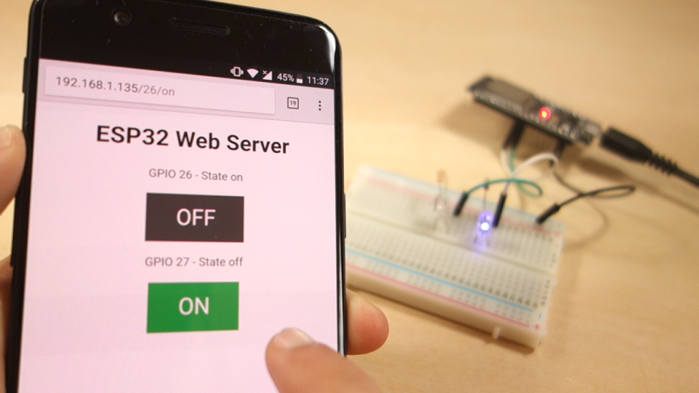
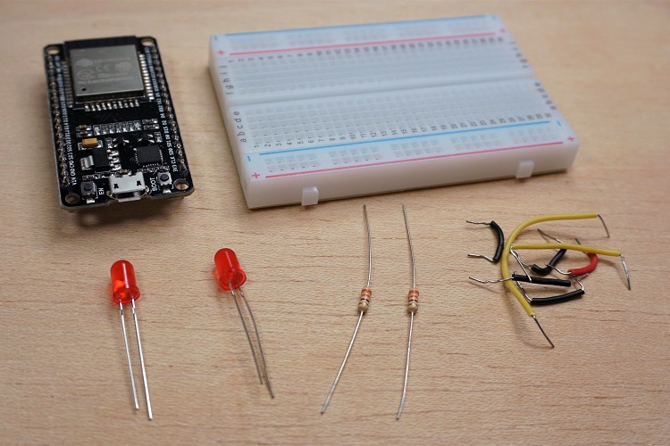
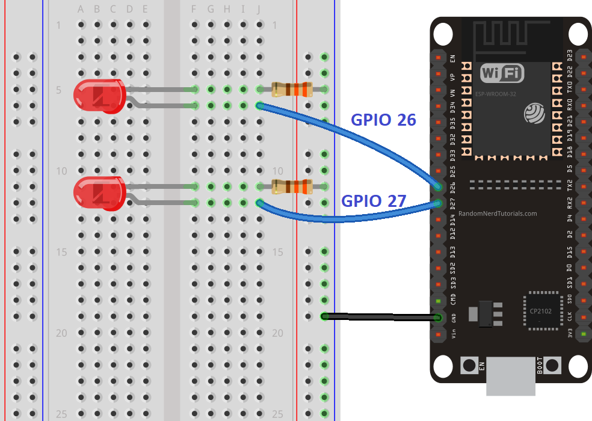
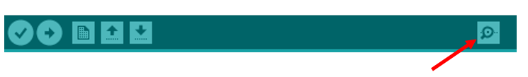
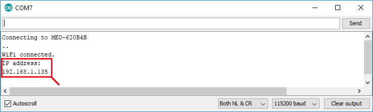
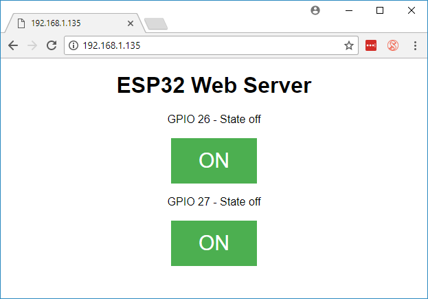
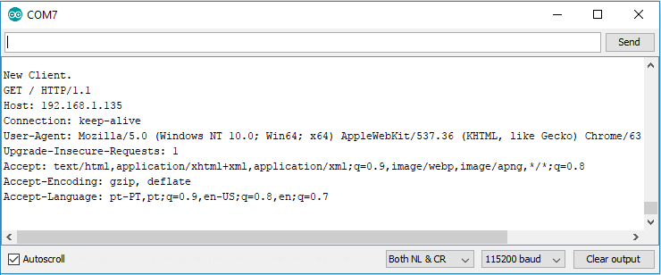

ESP32 Web Server

source : randomnerdtutorials.com/esp32-web-server-arduino-ide/
In this project you’ll create a standalone web server with an ESP32 that controls outputs (two LEDs) using the Arduino IDE programming environment. The web server is mobile responsive and can be accessed with any device that as a browser on the local network. We’ll show you how to create the web server and how the code works step-by-step.
Watch the Video Tutorial
Project Overview
Before going straight to the project, it is important to outline what our web server will do, so that it is easier to follow the steps later on.
The web server you’ll build controls two LEDs connected to the ESP32 GPIO 26 and GPIO 27;
You can access the ESP32 web server by typing the ESP32 IP address on a browser in the local network;
By clicking the buttons on your web server you can instantly change the state of each LED.
This is just a simple example to illustrate how to build a web server that controls outputs, the idea is to replace those LEDs with a relay, or any other electronic components you want.
Parts Required
For this tutorial you’ll need the following parts:

- ESP32 development board
- 2x 5mm LED
- 2x 330 Ohm resistor
- Breadboard
- Jumper wires
Schematic
Start by building the circuit.
Connect two LEDs to the ESP32 as shown in the following schematic diagram – one LED connected to GPIO 26, and the other to GPIO 27.

ESP32 Web Server Code
Here we provide the code that creates the ESP32 web server. Copy the following code to your Arduino IDE, but don’t upload it yet. You need to make some changes to make it work for you.
Programme test :
/*********
Rui Santos
Complete project details at http://randomnerdtutorials.com
*********/
// Load Wi-Fi library
#include <WiFi.h>
// Replace with your network credentials
const char* ssid = "REPLACE_WITH_YOUR_SSID";
const char* password = "REPLACE_WITH_YOUR_PASSWORD";
// Set web server port number to 80
WiFiServer server(80);
// Variable to store the HTTP request
String header;
// Auxiliar variables to store the current output state
String output26State = "off";
String output27State = "off";
// Assign output variables to GPIO pins
const int output26 = 26;
const int output27 = 27;
// Current time
unsigned long currentTime = millis();
// Previous time
unsigned long previousTime = 0;
// Define timeout time in milliseconds (example: 2000ms = 2s)
const long timeoutTime = 2000;
void setup() {
Serial.begin(115200);
// Initialize the output variables as outputs
pinMode(output26, OUTPUT);
pinMode(output27, OUTPUT);
// Set outputs to LOW
digitalWrite(output26, LOW);
digitalWrite(output27, LOW);
// Connect to Wi-Fi network with SSID and password
Serial.print("Connecting to ");
Serial.println(ssid);
WiFi.begin(ssid, password);
while (WiFi.status() != WL_CONNECTED) {
delay(500);
Serial.print(".");
}
// Print local IP address and start web server
Serial.println("");
Serial.println("WiFi connected.");
Serial.println("IP address: ");
Serial.println(WiFi.localIP());
server.begin();
}
void loop(){
WiFiClient client = server.available(); // Listen for incoming clients
if (client) { // If a new client connects,
currentTime = millis();
previousTime = currentTime;
Serial.println("New Client."); // print a message out in the serial port
String currentLine = ""; // make a String to hold incoming data from the client
while (client.connected() && currentTime - previousTime <= timeoutTime) { // loop while the client's connected
currentTime = millis();
if (client.available()) { // if there's bytes to read from the client,
char c = client.read(); // read a byte, then
Serial.write(c); // print it out the serial monitor
header += c;
if (c == '\n') { // if the byte is a newline character
// if the current line is blank, you got two newline characters in a row.
// that's the end of the client HTTP request, so send a response:
if (currentLine.length() == 0) {
// HTTP headers always start with a response code (e.g. HTTP/1.1 200 OK)
// and a content-type so the client knows what's coming, then a blank line:
client.println("HTTP/1.1 200 OK");
client.println("Content-type:text/html");
client.println("Connection: close");
client.println();
// turns the GPIOs on and off
if (header.indexOf("GET /26/on") >= 0) {
Serial.println("GPIO 26 on");
output26State = "on";
digitalWrite(output26, HIGH);
} else if (header.indexOf("GET /26/off") >= 0) {
Serial.println("GPIO 26 off");
output26State = "off";
digitalWrite(output26, LOW);
} else if (header.indexOf("GET /27/on") >= 0) {
Serial.println("GPIO 27 on");
output27State = "on";
digitalWrite(output27, HIGH);
} else if (header.indexOf("GET /27/off") >= 0) {
Serial.println("GPIO 27 off");
output27State = "off";
digitalWrite(output27, LOW);
}
// Display the HTML web page
client.println("<!DOCTYPE html><html>");
client.println("<head><meta name=\"viewport\" content=\"width=device-width, initial-scale=1\">");
client.println("<link rel=\"icon\" href=\"data:,\">");
// CSS to style the on/off buttons
// Feel free to change the background-color and font-size attributes to fit your preferences
client.println("<style>html { font-family: Helvetica; display: inline-block; margin: 0px auto; text-align: center;}");
client.println(".button { background-color: #4CAF50; border: none; color: white; padding: 16px 40px;");
client.println("text-decoration: none; font-size: 30px; margin: 2px; cursor: pointer;}");
client.println(".button2 {background-color: #555555;}</style></head>");
// Web Page Heading
client.println("<body><h1>ESP32 Web Server</h1>");
// Display current state, and ON/OFF buttons for GPIO 26
client.println("<p>GPIO 26 - State " + output26State + "</p>");
// If the output26State is off, it displays the ON button
if (output26State=="off") {
client.println("<p><a href=\"/26/on\"><button class=\"button\">ON</button></a></p>");
} else {
client.println("<p><a href=\"/26/off\"><button class=\"button button2\">OFF</button></a></p>");
}
// Display current state, and ON/OFF buttons for GPIO 27
client.println("<p>GPIO 27 - State " + output27State + "</p>");
// If the output27State is off, it displays the ON button
if (output27State=="off") {
client.println("<p><a href=\"/27/on\"><button class=\"button\">ON</button></a></p>");
} else {
client.println("<p><a href=\"/27/off\"><button class=\"button button2\">OFF</button></a></p>");
}
client.println("</body></html>");
// The HTTP response ends with another blank line
client.println();
// Break out of the while loop
break;
} else { // if you got a newline, then clear currentLine
currentLine = "";
}
} else if (c != '\r') { // if you got anything else but a carriage return character,
currentLine += c; // add it to the end of the currentLine
}
}
}
// Clear the header variable
header = "";
// Close the connection
client.stop();
Serial.println("Client disconnected.");
Serial.println("");
}
}
Setting Your Network Credentials
You need to modify the following lines with your network credentials: SSID and password. The code is well commented on where you should make the changes.
// Replace with your network credentials
const char* ssid = "REPLACE_WITH_YOUR_SSID";
const char* password = "REPLACE_WITH_YOUR_PASSWORD";
Uploading the Code
Now, you can upload the code and and the web server will work straight away. Follow the next steps to upload code to the ESP32:
1) Plug your ESP32 board in your computer;
2) In the Arduino IDE select your board in Tools > Board (in our case we’re using the ESP32 DEV Module);
3) Select the COM port in Tools > Port.
4) Press the Upload button in the Arduino IDE and wait a few seconds while the code compiles and uploads to your board.
5) Wait for the “Done uploading” message.
Finding the ESP IP Address
After uploading the code, open the Serial Monitor at a baud rate of 115200.

Press the ESP32 EN button (reset). The ESP32 connects to Wi-Fi, and outputs the ESP IP address on the Serial Monitor. Copy that IP address, because you need it to access the ESP32 web server.

Accessing the Web Server
To access the web server, open your browser, paste the ESP32 IP address, and you’ll see the following page. In our case it is 192.168.1.135.

If you take a look at the Serial Monitor, you can see what’s happening on the background. The ESP receives an HTTP request from a new client (in this case, your browser).

You can also see other information about the HTTP request.
Testing the Web Server
Now you can test if your web server is working properly. Click the buttons to control the LEDs.
At the same time, you can take a look at the Serial Monitor to see what’s going on in the background. For example, when you click the button to turn GPIO 26 ON, ESP32 receives a request on the /26/on URL.
When the ESP32 receives that request, it turns the LED attached to GPIO 26 ON and updates its state on the web page.
The button for GPIO 27 works in a similar way. Test that it is working properly.